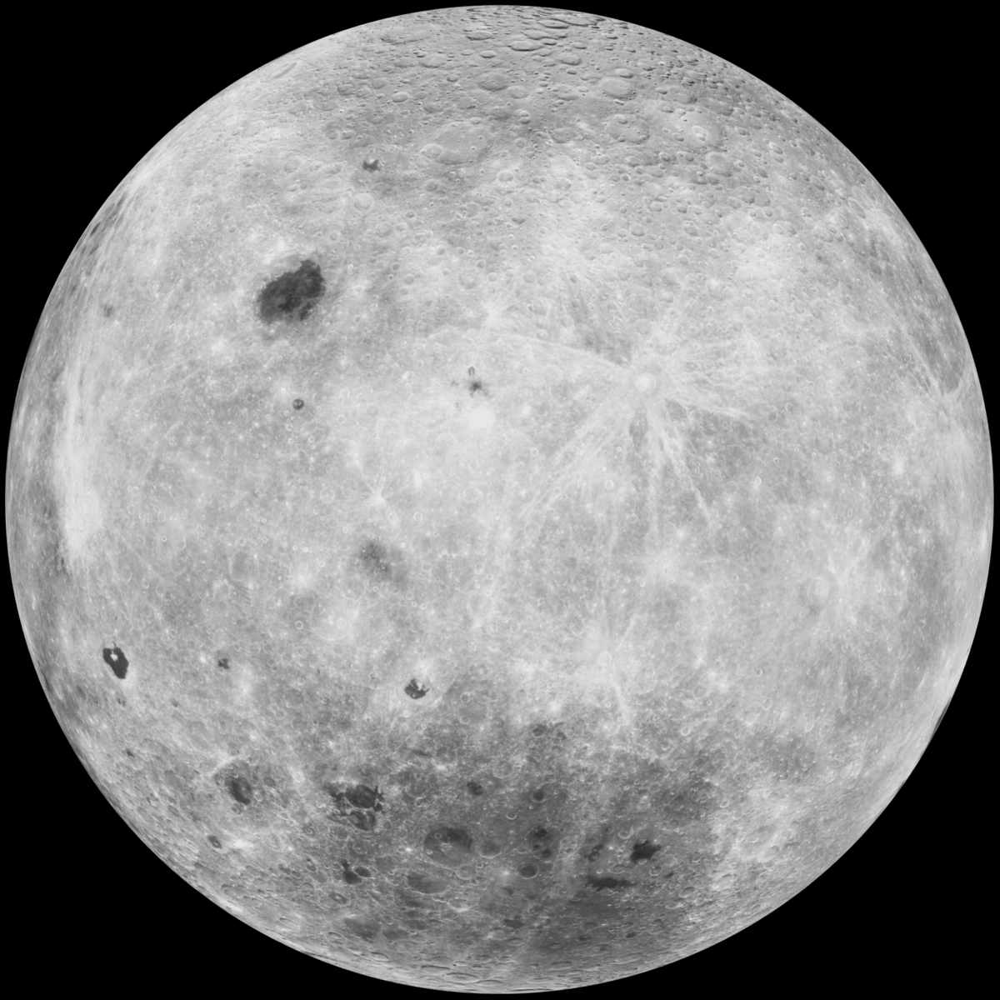

Welcome to Jon Babb's Widgets and Things!
Welcome! Here we are testing Jon Babb's website development skills. Think of it like the Hunger Games of web development for him. If he does good, he'll get a good grade... but if he does bad, then off to the dark web with him! R>I>P> Am I right?? Lol, Jk. We also sell the finest of magical products from Tibetan Monks.
You need a light to read at night For words you cannot see I cannot grow within the dark Knowledge like a tree Needs the Sunrise to be Singing, ringing, meaning There is a darkness I must fight I’ll need a deeper light To see within the growing night Words I cannot see You need a light to read at night Just like me Singing, ringing, meaning What am I? Ringing like a wave… If you can see me standing near You are risen from the grave What am I? Singing, ringing, meaning What am I? Ringing like a wave… You must have light, you must be brave Ringing, singing by the grave What am I? Singing, ringing, meaning -From a short story by Jon Babb "Triely Poely"